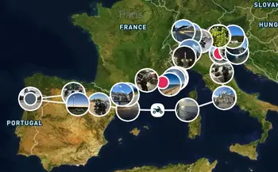
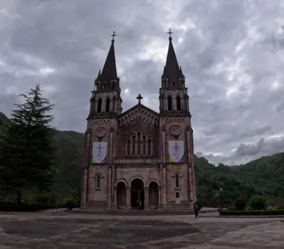
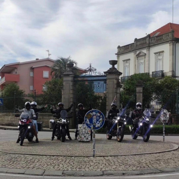

A MotoXpeditions organiza expedições pensadas para quem procura aventura, descoberta e a liberdade de viajar em duas rodas. Cada rota é cuidadosamente planeada para oferecer paisagens marcantes, estradas desafiantes e momentos inesquecíveis. Aqui encontras algumas das nossas expedições mais emblemáticas.
Europa - 12 Países, Uma Aventura Inesquecível
A nossa grande expedição europeia é uma viagem pensada para quem quer viver a estrada sem fronteiras. Partimos de Portugal rumo a Espanha, onde seguimos até ao Mediterrâneo para embarcar no ferry que nos leva diretamente a Itália. A aventura começa logo à chegada, com um dia dedicado a explorar Roma e o Vaticano, dois dos destinos mais emblemáticos da Europa.
De seguida, atravessamos Itália rumo ao leste, passando pela histórica República de San Marino, pelas ruas mágicas de Veneza e pela zona costeira de Trieste. A viagem continua pela Eslovénia, onde cruzamos o país até entrar na Croácia, com dormida em Rijeka, uma cidade vibrante junto ao Adriático.

Roteiro da Expedição Europeia
No regresso, voltamos a atravessar a Eslovénia, desta vez passando pela capital, Liubliana, antes de seguir para a Áustria. Daí regressamos a Itália para percorrer os majestosos Dolomitas, visitar lagos icónicos e enfrentar algumas das estradas mais impressionantes da Europa, incluindo o lendário Passo dello Stelvio.
A rota segue depois para Zurique, na Suíça, antes de regressar novamente a Itália e iniciar a descida pela costa sul de França. Passamos por cidades emblemáticas como Nice e Mónaco, sempre acompanhados por paisagens costeiras de cortar a respiração. Atravessamos novamente para Espanha, onde subimos até Andorra, um destino perfeito para quem gosta de altitude e curvas técnicas.
A expedição termina com o regresso a Portugal, trazendo na bagagem milhares de quilómetros, paisagens inesquecíveis e uma experiência verdadeiramente épica sobre duas rodas.
Informação
Detalhes
Duração estimada
15 dias
Dificuldade
Alta
Países/Estados
Portugal, Espanha, Itália, Vaticano, San Marino, Eslovénia, Croácia, Áustria, Suíça, França, Mónaco, Andorra
Quilometragem Aproximada
5000-6000 km
Ideal para
Motociclistas experientes que procuram uma grande aventura internacional
Preço (Sozinho)
3500€ (Combustível não incluído)
Preço (Com Passageiro)
5000€ (Combustível não incluído)
Picos da Europa
Os Picos da Europa são um dos destinos mais impressionantes para qualquer motociclista que aprecia curvas técnicas, altitude e paisagens de montanha verdadeiramente grandiosas. Nesta expedição percorremos estradas sinuosas que serpenteiam por vales profundos, atravessamos desfiladeiros imponentes e alcançamos miradouros que oferecem vistas de cortar a respiração.

Basílica de Santa Maria la Real de Covadonga
É uma viagem intensa, cheia de emoção e ritmo, onde cada quilómetro traz um novo cenário dramático. Ideal para quem procura adrenalina, desafio e a sensação única de conduzir no coração de uma das cadeias montanhosas mais icónicas da Península Ibérica.
Informação
Detalhes
Duração estimada
5 dias
Dificuldade
Média/Alta
Países/Estados
Espanha
Quilometragem Aproximada
1500 km
Ideal para
Quem procura curvas, altitude e adrenalina
Preço (Sozinho)
1000€ (Combustível não incluído)
Preço (Com Passageiro)
1600€ (Combustível não incluído)
Nacional 2
A mítica Nacional 2 atravessa Portugal de norte a sul, ligando Chaves a Faro ao longo de mais de 700 km e revelando a enorme diversidade paisagística e cultural do país. Ao longo desta rota histórica, atravessam‑se serras imponentes, vales profundos, planícies extensas e aldeias cheias de tradição, sempre com a sensação de estar a descobrir o verdadeiro coração de Portugal. Cada etapa oferece um ritmo próprio, marcado por gastronomia regional, património local e a hospitalidade das comunidades que vivem ao longo da estrada.

Nacional 2, KM 0, Chaves
Esta expedição é uma celebração da aventura e da camaradagem, proporcionando momentos únicos tanto para motociclistas experientes como para quem está a iniciar-se em viagens mais longas. É uma viagem obrigatória para qualquer apaixonado por duas rodas que queira sentir a essência do país de forma autêntica, desfrutando de uma rota icónica que combina história, paisagem e liberdade na sua forma mais pura.
Informação
Detalhes
Duração estimada
4 dias
Dificuldade
Média
Países/Estados
Portugal
Quilometragem Aproximada
1000 km
Ideal para
Todos os níveis; viagem icónica e cultural
Preço (Sozinho)
500€ (Combustível não incluído)
Preço (Com Passageiro)
900€ (Combustível não incluído)
Viagens Personalizadas
Criamos expedições totalmente personalizadas para grupos que procuram algo diferente. Seja uma rota curta de fim de semana, uma viagem temática ou um percurso internacional, adaptamos a experiência ao ritmo, interesses e objetivos de cada grupo. Planeamos o trajeto, alojamento, pontos de interesse e apoio técnico, garantindo uma viagem única e feita à medida.